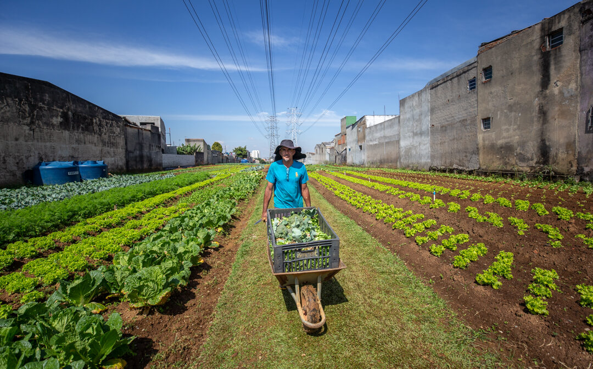
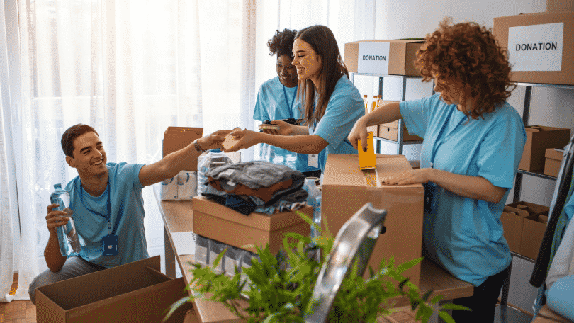
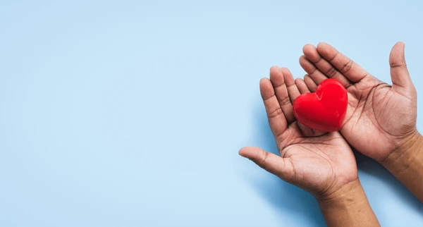

O projeto visa oferecer aulas de reforço escolar e atividades
extracurriculares para crianças e adolescentes em situação de
vulnerabilidade social, proporcionando melhorias significativas no
desempenho escolar e desenvolvimento pessoal.
Objetivo: Melhorar a qualidade da educação de 500
crianças
Duração: 12 meses
Status: Em andamento
Impacto: 350 crianças beneficiadas até o momento
Projeto Alimentação Solidária
Distribuição de alimentos do projeto Alimentação Solidária
Iniciativa que distribui cestas básicas e oferece refeições
nutritivas para famílias em situação de insegurança alimentar,
garantindo acesso adequado a alimentos de qualidade.
Objetivo: Atender 1.000 famílias mensalmente
Duração: Contínuo
Status: Em andamento
Impacto: 800 famílias atendidas mensalmente
Projeto Horta Comunitária

Horta comunitária cultivada por voluntários e comunidade
Projeto que incentiva a criação de hortas comunitárias em áreas
urbanas, promovendo segurança alimentar, educação ambiental e
geração de renda para comunidades locais.
Objetivo: Criar 20 hortas comunitárias
Duração: 18 meses
Status: Em andamento
Impacto: 12 hortas já implantadas
Oportunidades de Voluntariado
Junte-se a nós e faça a diferença! Temos diversas oportunidades para
você contribuir com seu tempo e talento.
Como Funciona
Nosso sistema de voluntariado permite que você escolha projetos
alinhados com seus interesses e disponibilidade. Após o cadastro,
você poderá se candidatar a vagas específicas e acompanhar seu
histórico de participação.

Voluntários engajados em nossos projetos
Áreas de Atuação
Educação: Aulas de reforço, alfabetização,
oficinas culturais
Assistência Social: Distribuição de alimentos,
atendimento às famílias
Meio Ambiente: Hortas, coleta seletiva, educação
ambiental
Preencha o formulário completo com suas informações
Escolha suas áreas de interesse
Aguarde o contato da nossa equipe
Participe das ações e projetos
Como Doar
Sua doação é fundamental para mantermos nossos projetos e ampliar
nosso impacto. Todo recurso é aplicado de forma transparente e você
pode acompanhar os resultados.
Formas de Doação
Doação Online
Realize doações de forma rápida e segura através do nosso sistema
online. Aceitamos cartões de crédito, débito e PIX.
Transferência Bancária
Você pode fazer transferências diretas para nossa conta bancária:
Banco: Banco do Brasil
Agência: 0000-0
Conta Corrente: 00000-0
CNPJ: 00.000.000/0001-00
PIX
Doações via PIX são instantâneas:
Chave PIX: contato@ongmrqs.org.br

Sua doação transforma vidas
Onde o Seu Dinheiro é Aplicado
Garantimos total transparência na aplicação dos recursos
arrecadados:
75% dos recursos são direcionados diretamente para os projetos
15% são utilizados para custos operacionais
10% são destinados a expansão e novos projetos
Todos os recursos são auditados e relatórios são publicados
trimestralmente em nossa área de transparência.
Metas e Progresso
Acompanhe em tempo real o progresso de nossas campanhas de
arrecadação:
Projeto Educação para Todos: R$ 450.000
arrecadados de R$ 500.000 (90%)
Projeto Alimentação Solidária: R$ 120.000
arrecadados de R$ 150.000 (80%)
Projeto Horta Comunitária: R$ 80.000 arrecadados
de R$ 100.000 (80%)
Prestação de Contas
Publicamos relatórios trimestrais detalhados sobre a aplicação de
todos os recursos arrecadados. Todos os doadores recebem
notificações por e-mail com os relatórios de prestação de contas.
Nossa organização é auditada anualmente por empresas externas
independentes, garantindo máxima transparência e confiabilidade.